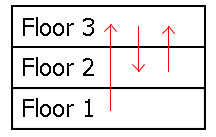

Despite the popularity of Hilbert's infinite hotel, Hilbert decided to try managing extremely large finite hotels, instead.
To cut costs, Hilbert wished to power the new hotel with his own special generator. Each floor would send power to the floor above it, with the top floor sending power back down to the bottom floor. That way, Hilbert could have the generator placed on any given floor (as he likes having the option) and have electricity flow freely throughout the entire hotel.
Unfortunately, the contractors misinterpreted the schematics when they built the hotel. They informed Hilbert that each floor sends power to another floor at random, instead. This may compromise Hilbert's freedom to have the generator placed anywhere, since blackouts could occur on certain floors.
For example, consider a sample flow diagram for a three-story hotel:

If the generator were placed on the first floor, then every floor would receive power. But if it were placed on the second or third floors instead, then there would be a blackout on the first floor. Note that while a given floor can receive power from many other floors at once, it can only send power to one other floor.
To resolve the blackout concerns, Hilbert decided to have a minimal number of floors rewired. To rewire a floor is to change the floor it sends power to. In the sample diagram above, all possible blackouts can be avoided by rewiring the second floor to send power to the first floor instead of the third floor.
Let $F(n)$ be the sum of the minimum number of floor rewirings needed over all possible power-flow arrangements in a hotel of $n$ floors. For example, $F(3) = 6$, $F(8) = 16276736$, and $F(100) \bmod 135707531 = 84326147$.
Find $F(12344321) \bmod 135707531$.